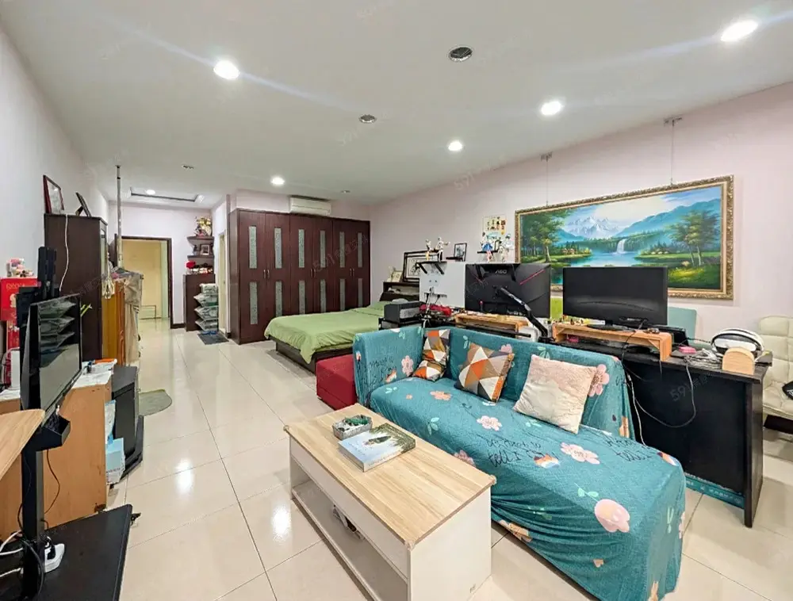

約 39 坪土地，透天持分完整
市區透天的土地本身就是稀缺資產，也是長期自住與轉售價值的基礎。

桃園市心，難得保留透天大宅尺度。從一樓室內車庫到三層生活領域，容得下相聚，也保留彼此的從容。
2,795 萬（含車位）
這是一座為真實日常長成的家。車輛、餐桌、家人與工作，都能找到自己的位置。二樓雙套房適合不同世代保有隱私；三樓延伸空間，能隨人生階段成為臥室、書房或工作室。
不把優勢藏在規格裡。從自己的土地、停車、共餐到每一代的獨立空間，這座家真正珍貴的是：每一天都用得上。
市區透天的土地本身就是稀缺資產，也是長期自住與轉售價值的基礎。
車停自家，不必找車位；前後仍保有收納與彈性使用區，搬運物品更從容。
廚房餐廳集中在一樓後段，另有獨立洗衣曬衣空間，家務不占用起居區。
家庭客廳位在私領域中心，兼顧安靜與相聚，也能規劃閱讀、影音或親子空間。
每層都有衛浴，不同世代作息互不打擾，長輩、成年子女或親友留宿都合適。
可作臥室、書房、工作室或健身房，讓空間跟著家庭成長。（三樓為增建、未登記）
從回家停車、共餐相聚，到休息與獨處，每一層都有清楚而寬裕的角色。

室內車庫、後段廚房餐廳、洗衣曬衣區。

中段客廳、後主臥套房（含衛浴）、前套房（含衛浴）。

雙套房格局，讓不同世代保有自己的生活節奏。

前空間、後套房（含衛浴）。三樓為增建，未登記
一張餐桌，
把每一天
留在一起。
寬裕的廚房與餐敘空間，讓備餐、用餐與談笑都舒展。後方另有獨立洗曬區，日常機能各得其所。
以下皆為現況實拍，點選可放大。





影片含部分 AI 生成情境畫面，僅供示意，非現況；實際屋況以現場看屋為準。
以不同生活情境，為室內的尺度與彈性提供想像。每張示意圖都清楚區隔於實拍。


本區圖片為 AI 情境示意，僅用於呈現空間規劃與生活想像；非物件現況、非施工承諾，實際屋況以現場及正式文件為準。
位於大業、大有生活圈周邊，公園、採買與學校已融入日常。
可銜接大業路、春日路與台四線，通勤與跨區移動有彈性。
從育兒、與父母同住到成年子女需要獨立空間，三層配置與四衛浴減少搬家壓力。
市區透天同時具備土地、室內停車與完整機能，供給相對有限；實際價格仍隨市場與交易條件變動。
公園、採買、教育與主要道路，各自支撐一家人的每一天。
以上距離與時間為地圖估算，實際以現場與交通狀況為準。
※ 含三樓增建之使用面積約 67.67 坪，其中三樓為增建、未辦理登記，非權狀面積，不保證合法性，買方應自行評估（含貸款估價影響）。所有坪數以地政登記謄本為準；如有出入，以謄本及現況為準。
載入中…
屋主自售，直接與屋主 Jay 聯絡，索取完整資料並安排看屋時段。
WhatsApp：+886 975 066 275LINE：即將提供
填好送出後會開啟 WhatsApp，訊息已幫你寫好，按「傳送」即可。